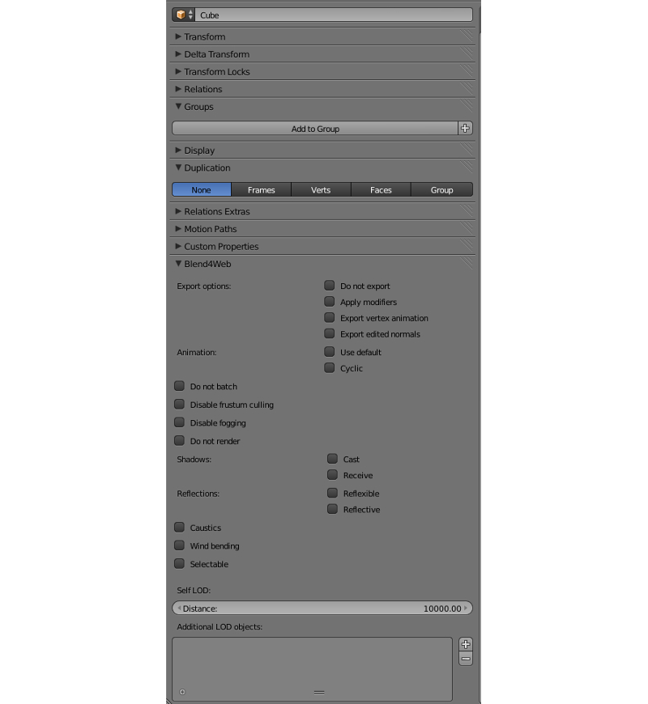
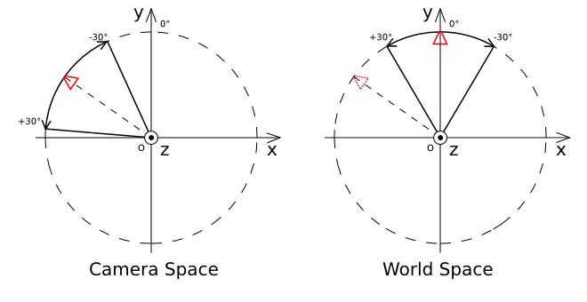

Objects¶
Objects are intended to position components of different types (meshes, cameras, lamps etc) in a 3D scene space.
Types¶
The engine supports objects of the following types:
mesh
camera
lamp
empty
curve
armature
speaker
force field
Settings¶
The following is supported for all types of objects: transform, data reference, parent object, group membership and a range of the engine’s special properties.
{kind=link}
- Transform > Location
Position coordinates.
- Transform > Rotation
Rotation angles. The XYZ Euler mode should be used (set by default).
- Transform > Scale
Scaling. All 3 components (x, y, z) should be the same. Scaling for the physics objects is not supported.
- Object Data (tab)
Reference to the datablock which is specific for the objects of different types.
- Relation > Parent
Reference to the parent object.
- Blend4Web > Do not export
Do not export.
- Blend4Web > Apply modifiers
Apply the object’s modifiers upon export.
- Blend4Web > Export vertex animation
Export previously created and saved vertex animation.
- Blend4Web > Export edited normals
Export previously edited and saved normals.
- Blend4Web > Animation > Use default
Upon loading into the engine start playback of the animation assigned to the object.
- Blend4Web > Animation > Cyclic
Сyclically repeat the animation assigned to the object. Animation cycling is also applied to particle systems and speakers (if they are present)
- Blend4Web > Detect collisions
Activate the object’s physics.
- Blend4Web > Character
Enable the object as a physics character.
- Blend4Web > Vehicle part
Enable the object as a part of a vehicle.
- Blend4Web > Do not batch
Force the object to become a dynamic object.
- Blend4Web > Disable frustum culling
Disable frustum culling optimization.
- Blend4Web > Disable fogging
Disable fog for the object.
- Blend4Web > Do not render
Disable object rendering (for example useful for a physics object).
- Blend4Web > Shadows: Cast и Blend4Web > Shadows: Receive
Cast and receive shadows respectively. Can be enabled simultaneously.
- Blend4Web > Reflections: Reflexible
When enabled the object is reflected in the dynamic mirror surfaces.
- Blend4Web > Reflections: Reflective
When enabled the object surface reflects other objects.
- Blend4Web > Reflections: Reflection plane
Text field for the name of the empty object defining the reflection plane.
- Blend4Web > Wind bending
Enable procedural animation under the influence of wind.
- Blend4Web > LOD transition ratio
Parameter for smoothing the switching between the LOD objects. It defines the additional distance at which the LOD objects are still rendered before getting replaced by the next LOD objects. Assigned for the main object. Measured in fractions of the object’s bounding sphere radius.
- Blend4Web > Self LOD > Distance
Distance from the camera at which the object is no longer rendered.
Deprecated since version 14.06: implemented in the standard Levels of Detail Blender’s tool.
- Blend4Web > Additional LOD objects
The interface for adding low-poly objects used for switching the levels of detail.
Deprecated since version 14.06: implemented in the standard Levels of Detail Blender’s tool.
Static and Dynamic Objects¶
All MESH objects can be divided into static and dynamic objects.
Static objects are objects, the meshes of which can be merged together if they have the same material.
Dynamic objects are objects, the meshes of which cannot be combined with each other.
Static objects are merged in order to optimize the number of draw calls. Dynamic objects are needed to make the movement of a separate object possible.
Among objects of the other type the dynamic ones are CAMERA and ARMATURE. All other objects are static.
The objects which have animation, physics or a parent, which is a dynamic object, are considered dynamic by default. When object movement is required but is not apparent from its settings, then its nesessary to enable the Blend4Web > Do not batch checkbox.
Camera¶
The camera settings are specified in the Properties panel under the Object Data tab.
Blend4Web > Move style – camera control mode. By default the camera is in Static mode and this can be changed only through the API call. In the Target mode the camera is rotating around a fixed point. The Eye mode allows rotation and translation as in first person view.
Blend4Web > Target location – available in the Target mode. This is the position of the camera pivot point. The Copy Cursor Location button copies the current 3D cursor position into this value.
Blend4Web > DOF front distance – described in the Postprocessing Effects section.
Blend4Web > DOF rear distance – described in the Postprocessing Effects section.
Blend4Web > DOF power – described in the Postprocessing Effects section.
Limiting the camera movement¶
There are several settings for the camera which limit its movement this way or another. They are grouped as Camera limits.

Types of limits
Blend4Web > Use distance limits – available in the Target mode. This defines the minimum and maximum distance from the camera to the pivot point.
Interval variants:
Max > Min - the distance from the camera to the object is limited by the interval [Min, Max]
Max = Min - the camera is fixed on a certain height above the object
Max < Min - no movement limits

Default values: Min = 1, Max = 100.
Blend4Web > Use horizontal rotation clamping – available in the Target and Eye modes. Limits the camera’s horizontal rotation relative to the pivot point (in the Target mode) or relative to its position (in the Eye mode).
The direction from Left to Right is considered positive and matches the counterclockwise direction for the Target mode, and the clockwise direction for the Eye mode:

Default values: Left = -180, Right = 180.
Blend4Web > Use vertical rotation clamping – available in the Target and Eye modes. Limits the camera’s vertical rotation relative to the pivot point (in the Target mode) or relative to its position (in the Eye mode).
The direction from Down to Up is considered positive:

If the Use horizontal rotation clamping checkbox is enabled, vertical rotation will be limited at least to the interval [-90, 90].
Default values: Down = -90, Up = 90.
Possible rotation limits pitfalls
Swapping the Left/Right or Down/Up values swaps the rotations arcs.

Left = Right, Up = Down - fixes the camera horizontally and vertically (respectively).
Rotation angles origin
You can choose the space of coordinates for horizontal and vertical rotation limits:
Camera space - all angles are measured relative to the initial camera position and orientation.
World space - horizontal angles are measured starting from the Y axis in the world space, while vertical angles - relative to the horizontal plane XOY in the world space.
For horizontal limits:
{kind=link}
For vertical limits:

The coordinate axes labelled on the pictures match the Blender’s world coordinate axes.
By default the Camera space option is selected.